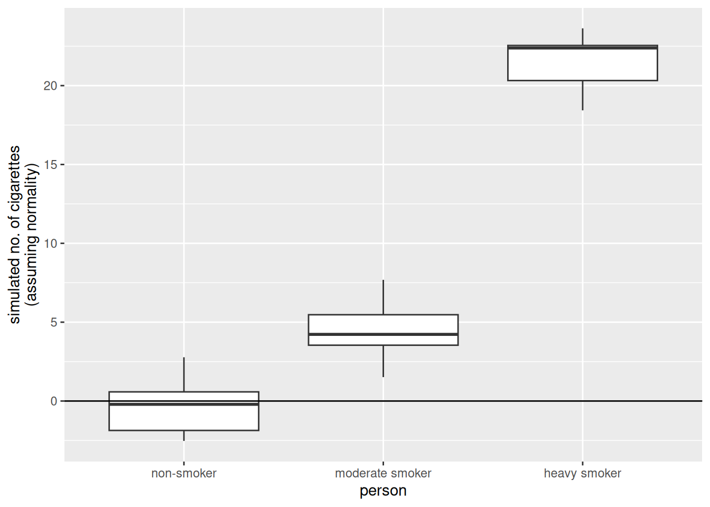
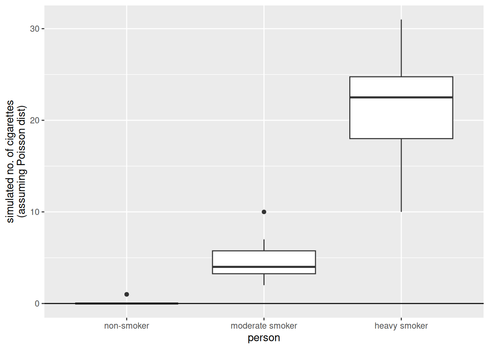
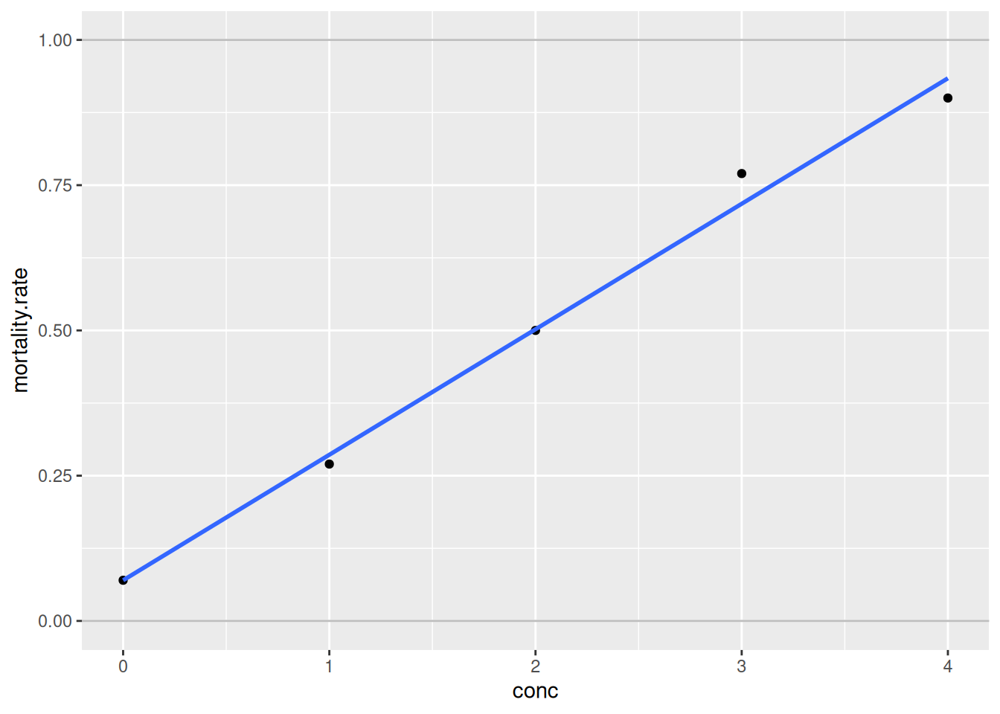
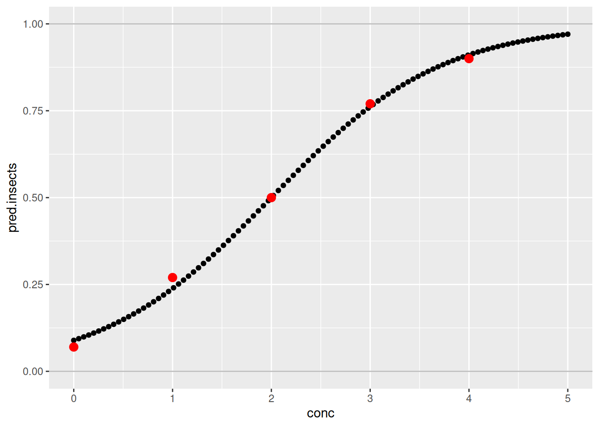
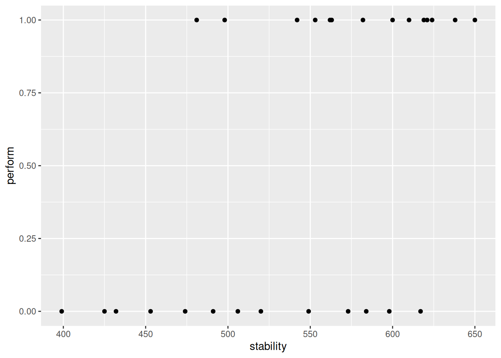
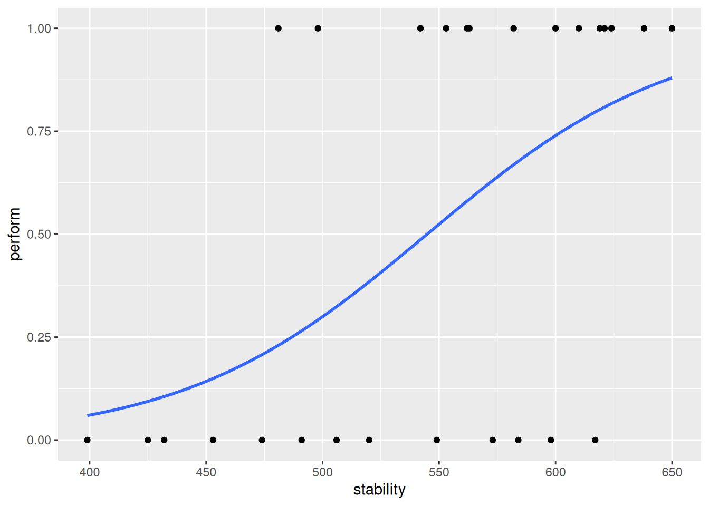

set.seed(1)
no.days <- 14
v.non.smoker <- c(rpois(n = no.days - 1, lambda = 0), 1)
v.smoker1_2 <- rpois(n = no.days, lambda = 5)
v.smoker.box <- rpois(n = no.days, lambda = 20)
d.smokers <- data.frame(no.cigarettes =
c(v.non.smoker, v.smoker1_2, v.smoker.box),
person = gl(n = 3,
k = no.days,
labels = c("non-smoker",
"moderate smoker",
"heavy smoker")))Applied Machine Learning and Predictive Modelling 1 - Notes
Week 01: Linear Models
Regression
\[ y = \beta_0 + \beta_1 \cdot x_1 + \epsilon \]
\(\beta_0\) and \(\beta_1\) are the regression parameters:
- \(\beta_0\) is also the intercept
- \(\beta_1\) ist the slope
Coefficients
The coefficients are estimated from data. Estimated regression coefficients are denoted with a hat (e.g. \(\hat{\beta_1}\)). Fitted values (i.e. what the model predicts) are denoted with a hat as well (i.e. \(\hat{y}\)). Residuals are the difference between observed and predicted values.
\[ \text{res} = y - \hat{y} \]
If the errors are normally distributed, regression coefficients can be tested with t-tests
Caution
Dichotomising p-values into ”significant”/”non-significant” is very bad practice!
The grade of fit can be quantified with \(R^2\)
\[ R^2 = corr(y, \hat{y})^2 \]
Note: \(R^2\) is not used to formally compare model.
p-values
The p-value quantifies the probability of observing the value of the test statistic, or a more extreme value, under the null hypothesis. Low p-values are coherent with a rejection of the null hypothesis stating that there is no effect. Large p-values (close to 1) do not imply the we can accept the null hypothesis.
Testing
Categorical Values
Categorical values can be tested via F-tests by using the drop1() function or by comparing two models via the anova() function. Comparisons among levels of a factor (i.e. ”contrasts”) can be performed by using the glht() function.
Continuous or discrete variables
Continuous (and discrete) variables can be tested via F-tests (with drop1()) or by t-tests (with summary()). Sometimes the inferential results for continuous variables are best displayed and communicated with confidence intervals.
Interactions
If an interaction term is shown to be significant, then all terms involved in this interaction play a relevant role. An interaction involving two predictors is called ”two-fold interaction” (e.g. age * species)
Note: An interaction can involve more than two predictor.
Week 02: Modelling non-linearities
A Model is called to be linear if it is linear on its coeffitinents. By including polynomials (e.g. \(x_1 + {x_1}^2\)) we can model non-linear relationships with a linear model
Caution
The term “linear” here does not refer to the shape of the curve you draw in the coordinate system, but to the way the parameters (the coefficients \(\beta\)) appear in the equation.
Non-linear effect
Note
Linear models can model non-linear effects!
Non-linear models are non-linear in their coefficients.
\[ y = \beta_0 + \beta_1 \cdot x^{\beta_2} + \epsilon \]
Generalise Additive Models (GAM)
GAMs come with advantages and disadvantages compared to e.g. polynomials:
Advantages
- the degree of complexity is automatically chosen
- the ”estimated degrees of freedom” give the user an indication of the complexity of a given smooth term
- smooth terms can be visualised
Disadvantages
- GAMs can run into computational issues (e.g. models that do not converge)
- the use of a quadratic term is simpler to explain than a GAM to a non-technical audience
- in order to fit and understand the results of a GAM some technical knowledge is required
Week 03 Generalised Linear Models
Linear Model Assumptions
The inference on the regression coefficients (p-values and CIs) is based on the following assumption about the errors:
\[ \varepsilon \stackrel{\text{iid}}{\sim} \mathcal{N}(0, \sigma^2) \]
This means that:
- The errors follow a normal distribution
- The errors expected value is zero
- The errors are homoscedastic (constant variance)
- The errors are independent
Count Data
Below, we list a few examples of count data:
- Items purchased by one client during a single shopping session.
- Number of children in a family.
- Faulty parts found in a car during an inspection.
Modelling count data with a linear model
If we were to use a linear model to model these data, we would assume the data to follow a normal distribution.
Note: I added a single cigarette to the non-smoker because if you don’t do so all p-values are 1
lm.smokers <- lm(no.cigarettes ~ person, data = d.smokers)
round(coef(lm.smokers), digits = 1) (Intercept) personmoderate smoker personheavy smoker
0.1 5.0 20.8 The estimates of this linear model, which assumes normality of the data, look good. Let’s dig a bit further and simulate some new observations from this linear model.
library(ggplot2)
set.seed(3)
sim.data.smokers <- simulate(lm.smokers)
ggplot(
mapping = aes(
y = sim.data.smokers$sim_1,
x = d.smokers$person)) +
geom_boxplot() +
geom_hline(yintercept = 0) +
ylab("simulated no. of cigarettes\n(assuming normality)") +
xlab("person")
There are some striking differences between the data we simulated from the linear model and the data that made up:
- The made up data are integers, the data simulated from the linear model are numeric (note that none of the simulated values is an integer).
- The made up data are always larger than zero, the data simulated from the linear model go below zero as well (i.e., a negative number of cigarettes)
- The variability in the made up data increases with the mean value of the person (i.e., “variability non smoker” < “variability moderate smoker” < “variability heavy smoker”). On the other hand, the variability of the simulated values is the same in all three groups.
The Poisson model
Let’s see how we could modify the linear model such that these requirements that come from the very nature of count data are fulfilled.
Avoiding negative fitted values
Consider the equation we have used so far when computing the fitted values of a linear model.
\[ \hat{y} = \hat{\beta}_0 + \hat{\beta}_1 \cdot x_1 \]
To solve the problem of negative fitted values, we must make sure that the right hand-side of this equation always produces positive results. One solution is to apply a transformation to it. For example, we can use the exponential function.
\[ \hat{y} = \exp(\hat{\beta}_0 + \hat{\beta}_1 \cdot x_1) \]
Note: Ee can rewrite the above equation by taking the logarithm on both sides.
Integers and non-constant variance
we also need to make sure that the simulated values are integers and that the variance of the observations depends on the mean values. For count data, the classical solution is to assume the data to follow a Poisson distribution (rather than the normal distribution).
\[ \log(\hat{y}) = \hat{\beta}_0 + \hat{\beta}_1 \cdot x_1 | \hat{y} = \text{Poisson}(\lambda) \]
Note: This model fullfills all the three requirements we listed above.
As a matter of fact, for the Poisson distribution the variance of the observations linearly increases with the mean value.
Generalised Linear Models
Linear models are well suited to very many situations encountered in practice. However, they are not suited when the response variable represents:
- Count data: There the Poisson Model is more adequate
- Binary or binomial data: There the Binomial Model is more adequate
Both these models are an extension of the linear model These models belong to the ”class” of Generalised Linear Models GLMs generalise the linear model such that non-normal data can be analysed.
Note
Note that in practice count and binomial data are virtually always overdispersed.
The Poisson model in R
To fit a Poisson model in R we can use the glm() function, where we specify the distribution to be used. GLMs generalise the linear model in the sense that the data can follow distributions other than normal.
glm.smokers <- glm(
no.cigarettes ~ person,
family = "poisson", ## we specify the distribution!
data = d.smokers
)Let’s simulate some data from this model.
set.seed(2)
sim.data.smokers.Poisson <- simulate(glm.smokers)
ggplot(
mapping = aes(
y = sim.data.smokers.Poisson$sim_1,
x = d.smokers$person
)
) +
geom_boxplot() +
geom_hline(yintercept = 0) +
ylab("simulated no. of cigarettes\n(assuming Poisson dist)") +
xlab("person")
The results obtained simulating from the Poisson model are much more similar to the observations.
Binary and binomial data
Examples
Binary data (0 or 1):
- Whether a client visiting a website clicks on advertisement banner.
- Whether a cancer patient survived an “invasive” surgery.
Binomial data (number of success / number of trials) \(\in [0, 1]\):
- The proportion of students that passes an exam (e.g., hopefully all).
- The proportion of trains that gets to destination on time.
The bliss data set
library(faraway)
data(bliss)
library(dplyr)
Attaching package: 'dplyr'The following objects are masked from 'package:stats':
filter, lagThe following objects are masked from 'package:base':
intersect, setdiff, setequal, unionbliss <- bliss %>%
mutate(mortality.rate = round(dead / (dead + alive), digits = 2))
ggplot(
data = bliss,
mapping = aes(
y = mortality.rate,
x = conc
)
) +
geom_point() +
geom_smooth(method = "lm", se = FALSE) +
ylim(0, 1) +
geom_hline(yintercept = 0:1, colour = "grey")`geom_smooth()` using formula = 'y ~ x'
The fit seems to be fairly good. However, what problem could arise when fitting a linear model to these data?
- Predictions may lay outside the probability range [0%, 100%].
- Even fitted values may lay outside [0%, 100%].
- Actually, the response variable is not normally distributed. Its distribution is bounded between 0% and 100%. The normal distribution is unbounded and thus inconvenient here.
- The variability of the observations is not constant as it is assumed by the normal distribution. This is not evident on the graph above as there is only one observation for each concentration group. If there were many observations per group, we could see that the variability is not constant along the y-axis.
Link function for binomial data
The solution to problems 1. and 2. is to use a link function such that predictions are constrained in the [0%, 100%] range. For binary or binomial data the default choice of the link function is the “logit”.
\[ \text{logit}(y) = \log(\dfrac{y}{1-y}) | y \in [0, 1] \]
Once you applied the link function to the left-hand side of this equation, you can bring it to the right-hand side by taking its inverse on both sides.
\[ \hat{y} = \text{inverse.logit}(\hat{\beta}_0 + \hat{\beta}_1 \cdot x_1) \]
Note
To deal with the peculiarities of count and binomial/binary data, we use a link function and assume a distribution other than the normal. This is the essence of GLMs.
The Binomial model in R
Let’s fit a Binomial model to the bliss dataset.
glm.insects <- glm(
cbind(dead, alive) ~ conc,
family = "binomial",
data = bliss
)Let’s visualise the results of this model.
new.data = data.frame(conc = seq(0, 5, length.out = 100))
new.data$pred.insects <- predict(glm.insects, newdata = new.data,
type = "response")
##
ggplot(data = bliss,
mapping = aes(y = mortality.rate,
x = conc)) +
ylim(0,1) +
geom_hline(yintercept = 0:1, col = "gray") +
##
## predictions for conc 0 --> 5
geom_point(data = new.data,
mapping = aes(
y = pred.insects,
x = conc)) +
##
## actual observations
geom_point(col = "red",
size = 3)
The fit of the model is quite good. Indeed, the predictions are quite close to the real observations.
Further on binary and binomial data
In many real applications there are more than two possible outcomes. Fortunately, an extension of the logistic regression to more than two classes exist. This method is called multinomial regression and is implemented in the multinom() function from the {nnet} package.
library(nnet)
multinom.iris <- multinom(
Species ~ Sepal.Length + Petal.Width,
trace = FALSE,
data = iris)Estimating the performance of a binary model
A very common way to estimate the performance of a binary model is too look at predicted values and compare them with the actual observations.
d.stab <- read.table(
"/home/nils/dev/mscids-notes/fs26/mpm1/data/stability.dat",
stringsAsFactors = TRUE,
header = TRUE
)
str(d.stab)'data.frame': 27 obs. of 2 variables:
$ perform : num 0 0 0 1 1 0 0 1 1 1 ...
$ stability: num 474 432 453 481 619 584 399 582 638 624 ...ggplot(
data = d.stab,
mapping = aes(
y = perform,
x = stability
)
) +
geom_point()
There are only two possible outcomes here: success or failure. Let’s fit a logistic regression model and add the fit to the this graph.
ggplot(
data = d.stab,
mapping = aes(
y = perform,
x = stability
)
) +
geom_point() +
geom_smooth(
method = "glm",
se = FALSE,
method.args = list(family = "binomial")
) `geom_smooth()` using formula = 'y ~ x'
As expected, stability has a positive effect on the response variable. Let’s have a look at the fitted values for this model.
glm.stab <- glm(
perform ~ stability,
data = d.stab,
family = "binomial")
fitted(glm.stab) %>%
round(digits = 2) 1 2 3 4 5 6 7 8 9 10 11 12 13 14 15 16
0.21 0.11 0.15 0.23 0.80 0.68 0.06 0.67 0.85 0.82 0.49 0.88 0.54 0.09 0.58 0.52
17 18 19 20 21 22 23 24 25 26 27
0.29 0.38 0.77 0.73 0.27 0.80 0.81 0.63 0.58 0.32 0.74 Note: They are probabilities, thus, bounded within 0 and 1.
To compare the fitted values with the observed values, which are indeed binary (0 or 1), we can also discretise/dichotomise the fitted values into 0 and 1. In order to do that, we use a cutoff of 0.5. Finally, let’s compare the observed and fitted values.
fitted.stab.disc <- ifelse(
fitted(glm.stab) < 0.5,
yes = 0,
no = 1
)
d.obs.fit.stab <- data.frame(
obs = d.stab$perform,
fitted = fitted.stab.disc)
table(
obs = d.obs.fit.stab$obs,
fit = d.obs.fit.stab$fitted) fit
obs 0 1
0 8 5
1 3 11The diagonal entries of this matrix represent correctly labelled observations